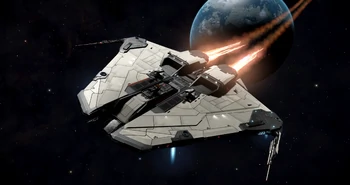
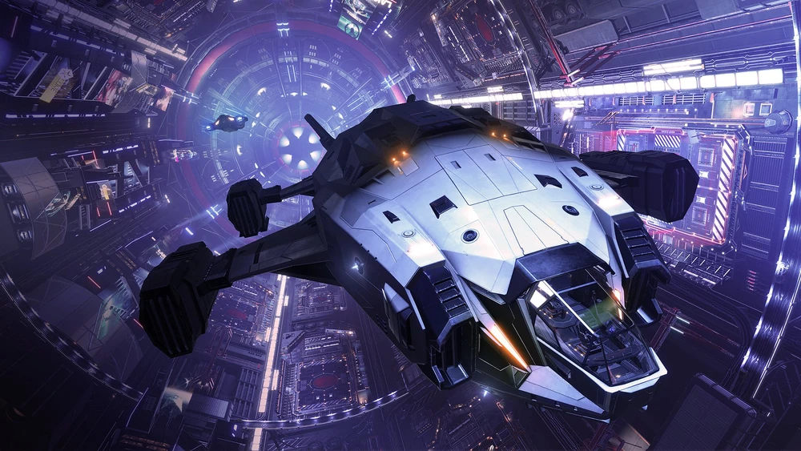

The Krait is a good entry point for AX combat. Boasting good enough hull and firepower to combat most interceptors. It's capacitor is more than enough to use 4 guardian weapons effectivey without much problem.

The Alliance Chieftain is Arguably the best ship when it comes to AX combat. Boasting good maneuverability, hull, cargo, and hardpoints to cold orbit effortlessly while dishing out immense dmg.